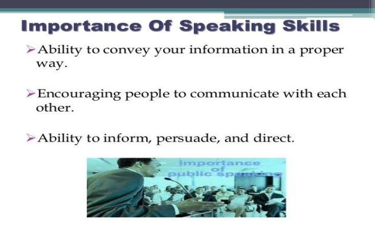

<!DOCTYPE html>
<title>Speaking skills</title>
<head>
        <button><a href="Index.html">Back</a></button>
    <br><br>
    <h1>Speaking skills</h1>
    <button><a href="Index.html">Back</a></button>
    <br><br>
</head>
<body>
    <p>
    <t>Speaking means</t> to converse, or expressing one's thoughts and feelings in spoken language. <t>Speaking skills</t> are the
    skills that give us the ability to communicate effectively. These skills allow the speaker, to convey his message in a 
    passionate, thoughtful, and convincing manner.<br>
    <Br>
    After all, the most effective way to communicate is through speech. Thus, speaking skills are a vitally important 
    method of communication.<br><Br>
    The four language skills of listening, speaking, reading, and writing are all interconnected. Proficiency in each skill is 
    necessary to become a well-rounded communicator, but the ability to speak skillfully provides the speaker with 
    several distinct advantages. The capacity to put words together in a meaningful way to reflect thoughts, opinions, and 
    feelings provides the speaker with these important advantages:
    <br><br>
    <BR>
    Ability to inform, persuade, and direct. Business managers, educators, military leaders, lawyers, and politicians, among 
    others, seek to develop their speaking skills to such a level that they are transformed into master communicators. 
    Speaking clearly and confidently can gain the attention of an audience, providing the golden opportunity for the 
    speaker to make the message known. Wise is the speaker who gains and then holds the attention of an audience, with 
    well-chosen words in a well-delivered presentation, forming a message that is effective, informative, and understood.
    <br><br>Ability to stand out from the rest. When one thinks of speaking skills, one tends to think of it as a common skill. Think 
    again. The ability to stand before others and speak effectively is not an ordinary ability. Many people are deathly 
    afraid of public speaking; others have little ability to form thoughts into sentences and then deliver those words in a 
    believable way. The bad news is that at any given moment the world has precious few with the speaking talents of, 
    say, Winston Churchill or John F. Kennedy. The good news is that a speaker whose skills are honed and developed 
    with constant application and hard work can stand out.
    <br><br>
    Ability to benefit derivatively. Well-developed verbal skills can increase one’s negotiation skills. Self-confidence is 
improved. A growing sense of comfort comes from speaking in front of larger and larger audiences. A reputation for 
excellence in speaking can accrue over time, thereby imparting a certain credibility to the speaker.
<br><br>Career enhancement. Employers have always valued the ability to speak well. It is, and always will be, an important 
skill, and well worth the effort in fully developing.
<br>
Personal satisfaction. Speakers who have experienced a connection with an appreciative audience through a wellcomposed and well-delivered presentation often find a deep level of fulfilment that is seldom achieved in other forms 
of communication. The normal sense of nervous tension can give way to feelings of accomplishment and exuberance 
when an audience expresses its outward appreciation to a speaker. It’s a reward, of sorts, for all the hard work and 
preparation that goes into honing your skills.
<br><br>

Speaking skills are important for career success, but certainly not limited to one’s professional aspirations. Speaking 
skills can enhance one’s personal life and thereby bring about the well-rounded growth that we should all seek.
<br><br>
The Three P’s of Public Speaking
Speaking in public doesn’t have to be a nerve-wracking experience. In fact, speaking can help you build your 
business. But before you can become a successful public speaker you need to overcome your fear by following these 
three simple steps:
<ul>
<li> Prepare</li>
<li>Practice</li>
<li> Present</li>
</ul>
<t>Prepare</t>
When you agree to speak, do your homework. How large will your audience be? How long are you to speak? What 
type of presentation is expected? The more you know, the easier it will be to prepare.
<br><br>Write and create your presentation well in advance. Waiting until the last minute doesn’t make it easier and creates 
additional stress. Being done ahead of time will not only give you more time for the next step, practice, it will also help 
relieve your anxiety.
<br><br>
Stop thinking about yourself and focus on your audience. As you prepare, consider: What does my audience need? 
Why are they here? How can I help them? Focusing on your goals and their needs will help shift your perspective
<br><br>
<t>Practice</t>
Practice, practice, practice. Know your presentation upside down, inside out and backwards. Don’t memorize your 
speech—and don’t read from a script. Once you know it well, you can use an outline with your key points highlighted 
to help you stay on track.<br><br>
If you are using a slide presentation, don’t read it. Make your visual aids just that—aids. Use them to provide engaging 
illustrations and brief highlights, and then talk about your subject with your audience.
<br><br>Arrive early. Running late and being rushed only builds stress and anxiety. Arriving early gives you a chance to see 
where you’ll be speaking, get comfortable with the space, meet and talk to a few people, and find a quiet spot to take a 
few deep breaths and calm yourself before you start
<br><br>
<t>Present</t>
It’s show time. You’ve prepared well and practiced until you know your presentation better than you know the 
alphabet. Just a few more tips to help you nail this one.<br><Br>
First, all those people in the audience—well, most of them—are just happy it’s you up there and not them. They came 
to see you succeed. They’re on your side and they’re rooting for you—so relax and roll with it.
<br><Br>Next, don’t make too much of audience expressions. People make weird faces—don’t interpret them as anything more 
than that. Accept that sometimes your audience will look funny and move on. Snoring may be a different story, 
however. . .<br><br>
Finally, engage your audience—don’t talk at them, talk with them. Ask for questions and answer them. More 
interesting, less boring. You’re not performing, you’re conversing. Are you nervous when you’re conversing with your 
friends? This should feel the same way.<br><br>
Keep your focus on your purpose and your audience. The more you think about them, the less time you have to think 
about yourself and how much you don’t want to do this. By the way, a few butterflies are good. But just a few–They are 
there to remind you that this is important to you.<br><br>
By putting these three P’s into practice, you can overcome your fear of public speaking and become a successful public 
speaker
<t>Filters in our brain: what our mind pays attention to</t>
A key part of the brain that focuses attention is the Reticular Activating System (RAS). RAS is best known as a filter 
because it sorts what’s important (and needs our attention) and what’s unimportant (and can be ignored). Without 
this filter, we would be overstimulated, distracted by the sights and sounds that surround us.
Because RAS subconsciously monitors all sensory information in the environment around you, it notices changes in 
stimuli. In addition to alerting the cerebrum to changes in the environment, the RAS also sends signals related to:
<br><br><ul>
<li> Physical need. When we’re hungry and we see food, we pay attention. We wake up in the night when we 
need to go to the bathroom.</li>
<li>Self-made choice. We decided to buy a new BMW 325 and suddenly see them everywhere. This effect is also 
called priming.</li>
<li>Your name. We notice the name dearest to us.</li>
<li>Emotion. If something evokes emotion in us, it has our attention.</li>
<li> Contrast. We pay more attention to things that contrast with other things.</li>
<li> Novelty. The brain pays more attention to new things in the environment.</li>
</ul>
<h4>GRAB ATTENTION</h4>
There are two kinds of attention: neck down, and neck up. Neck-up attention is when the listener has to make an 
effort to pay attention. Neck-down attention is when the listener is riveted to the speaker: she can't help but pay 
attention.<br>
Please note that, in our language of English, attention is paid because attention is a valuable currency. When 
listeners pay attention, they are rewarding you with arguably the most valuable currency in the world.
Here are 10 techniques that are guaranteed to earn you more attention without losing any of your professional 
credibility.<br><Br>
<t>1. Start with the unexpected</t>
<br>
Start with a bang, not a whimper. Smokers like matches that light with the first strike, and listeners like presentations 
that ignite interest with the first sentence. For instance:
"We stand today at a place of battle, one that 40 years ago saw and felt the worst of war."--President Ronald Reagan
"I stand before you today, the representative of a family in grief, in a country in mourning, before a world in shock."--
The Earl Spencer, brother of Lady Diana.<br>
"I wish you could have been there…"--Patricia Fripp, CSP, Former President of the National Speakers Association.
Each of these opening lines makes us lean in, lend an ear, and wonder where the speaker will take us. They jump right 
into the subject and create suspense, intrigue, curiosity. They capture neck-down attention.
<br><br><t>2. Make it about them.</t>
<br>
Now that you've gotten listeners' attention with your magnetic opening, make the story about them. Increase your 
You-to-Me-Ratio. Talk about their goals, their aspirations, and their anxieties. Cicero, a Roman statesman and orator, 
and one of the greatest speakers in the history of the world, said, "Tickling and soothing anxieties is the test of a 
speaker's impact and technique." He meant that you can capture attention if you remind an audience of a felt need, a 
pain point, or a threat to their well-being.<br>
"Ring around the collar," was a 1968 ad in which a housewife protected her husband from loss of social status and 
career disaster by using Whisk on his shirts. And many consultants I know use something called FUD to sell their 
projects: Fear, Uncertainty, and Doubt. A smattering of FUD gets our attention. When I feel it, I feel it in my chest.<br><br>
<t>3. Keep it concrete at the start.</t>
<br>
Show a prop. Use language that appeals to the senses. Don't tax the audience right away with abstract reasoning or 
academic concepts. Better to hide your smarts than to wear them on your sleeve. Storytelling is a powerful way to get 
into a topic because we are hard-wired to absorb information through storytelling. Tell a good story and you'll get 
neck-down attention.<br><br>
I once heard Robert Kennedy, Jr. speak about conservation on a boat on the Hudson River. He began by pointing south. 
"If you look in that direction," he said, "You will see the channel that for millions of years has been the largest 
spawning ground for sturgeon in the world."<br><br>
Of course, when I looked where he was pointing, I saw nothing but gray polluted water, not a sturgeon in sight, but I 
had the image of millions of large fish teeming so densely on the surface of the river that I could have walked across 
their backs to New Jersey.<br><br>
Only then did he dive into the data about the poor, languishing Hudson
<br><br>
<t>4. Keep it moving.</t>
<br>
<br>
Not just in terms of pace, but in terms of development. Make sure that every new bit of information you provide 
builds on what came before. We lose interest in movies when nothing is happening, or novels that stop while the 
author describes a bucolic setting for two pages. Our brains are saying, "I want action! Drama. Suspense." The same 
holds true for your listeners. They are time-pressed, content-driven, and results oriented.
<br>Think of the difference between a river and a canal. A canal is plodding while a river is dynamic and constantly 
changing. To please your listeners' insatiable desire for variety, make your presentations like rivers, not canals. Make 
sure there's always something happening, most especially when delivering webinars, where your audience is likely to 
be highly distracted<br>
<br>
<t>5. Get to the point.</t><br>
One of the great pleasures the audience has is quickly grasping what you're getting at. They resent you when you rob 
them of this pleasure.<br><Br><br>
I once saw an ad for a Seth Godin speech on why marketing technical products was too important to leave to 
marketing. When I saw the video, the first words out of his mouth were, "Marketing technical products is too 
important to leave to marketing." It was a no-nonsense speech that moved like a bullet train, straight down the track 
of that single point. Give them only one point, make it early and often, and they'll carry you out on their shoulders.<br><br>
<t>6. Arouse emotion.
</t><br><Br>
    Humor is inherently persuasive. It gives the speaker an unfair advantage because it literally changes the chemistry in 
    the room, and in the brain of everyone present. But don't try to tell jokes if you're not a comedian. Simply allow your 
    natural sense of humor to be present in the moment, and when something comes to mind, allow your humor to reveal 
    itself.<br><br>
    Confessing something personal about yourself can also make the audience feel connected with you. I had a client 
    recently--a senior person in her company--who confessed to her colleagues at a major company meeting that she had 
    been a bar tender, a taxi driver, and short-order cook in order to pay her college tuition. The audience was amazed 
    and thrilled as she drove home her point that we can all do more than we realize if we have the will to do whatever it 
    takes. One definition of courage, she said, is acting out of character.<br><br>
<br><br><t>7. Keep it interactive.</t><br><br>

Social scientists have demonstrated that an interactive audience is more easily persuaded than a passive one. In many 
circumstances, the give and take between speaker and audience breaks through the reticence and reserve of listeners, 
encouraging them to engage with the speaker and play a part in the proceedings
<br><br>
We see this in certain churches using the call and response tradition of worship. We see it in schools and universities, 
where an effective teacher, by asking questions, can get monosyllabic students to open up and participate.
<br><br>And of course the world also witnessed the power of audience interaction in the massive rallies of Nazi Germany 
when Hitler would cry, "Sieg," and the soldiers replied, "Heil," raising their arms in the Nazi salute. I include this 
negative example because it is a powerful reminder that what makes a speaker a dangerous demagogue is not his 
technique, but his moral purpose
<br><br>
<t>8. Write clear headlines.</t>
Write headlines for your slides that express a point of view. The audience will get the big idea and look at the body of 
the slide for evidence that supports your point.<br><br>
For instance, "We Can Dominate the Market" is a better headline than, "Market Share." It's better because it 
implies action, it's brimming with intellectual and emotional content, and it captures the physicality of neck-down 
attention much more than the inert phrase "Market Share."<br><br>
<t>9. Keep it short.</t><br><br>
Stop talking before they stop listening. The mind cannot absorb what the behind cannot endur
<br><br>
<t>10. Let there be you.</t>
The presence of a human being alone on a stage of any kind, whether it's the floor of a small meeting room or the 
elevated platform of a vast ballroom, is profound. It immediately creates neck-down attention. Ralph Waldo Emerson 
said, "What you are speaks so loudly that [nobody] can hear what you're saying."<br><br>
Listeners interpret everything a speaker does: they read your face, your inner rhythm, your posture, voice, and stance. 
In fact, the human mind ascribes moral intention to physical cues having the slightest hint of emotional expression.
<br><Br>The problem is the mind does this in a matter of seconds, and you have to speak longer than that. Plus you may be 
nervous, not at your scintillating best, so your technical skill at capturing and holding attention could be the difference 
between success and failure.<br>
<br>
Every business presentation will have plenty of moments when the audience will have to work hard and pay attention 
to grasp the material. I am suggesting that your results, and your reputation, will improve when your audience finds 
you and your content fascinating. <Br>
I urge you to go for the neck-down stuff<br>
</p>
<button><a href="https://drive.google.com/uc?export=download&id=1Lyws2ZmmOudBPu-ORXW0j8_uJdJfP-7a">PDF</a></button>
<button><a href="#">QUIZ</a></button>
<button><a href="$">RATING</a></button>

</body>
<style>
    body{
        background: url("https://lh3.googleusercontent.com/McFhxGtsm2qAzVEh50xH2dr0jKLrXimi8FkOZLlpC7JDCCnOLa2k_g5wMdXjBgLvohM1gSNkqKoXuA4Uh4WDDaf5A1dNiF52HyyVegm2tytZiuZGgfSuKE1N-RscABrYRA=w545");
    background-repeat: no-repeat;
    background-attachment: fixed;
    background-position: center;
    background-size: cover;
        width: 1000px;


        }
    h1{
        text-align: center;
    }
    t{
        font-weight: bold;
    }
    button
    {
        background-color:rgb(0, 255, 247);

    }
    button:hover{
        color:yellow;
        background-color:rgb(94, 255, 0);
        border:radius 0px;
    }
    a
    {
        text-decoration: none;
    }

</style>
</html>